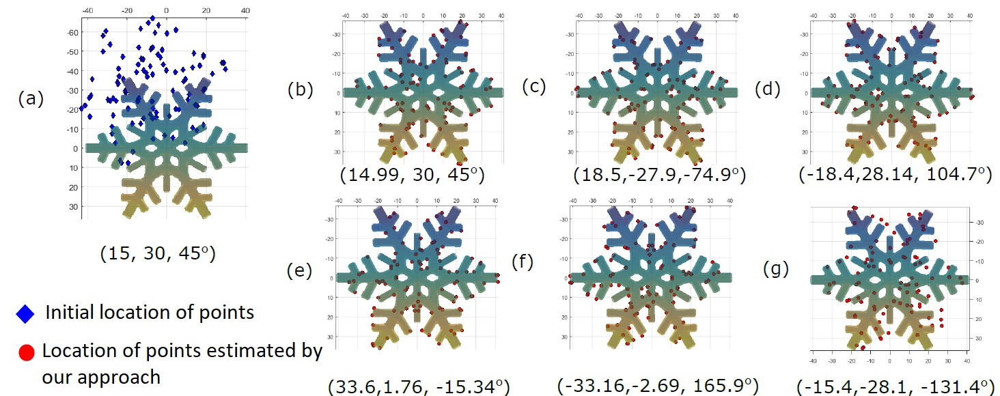
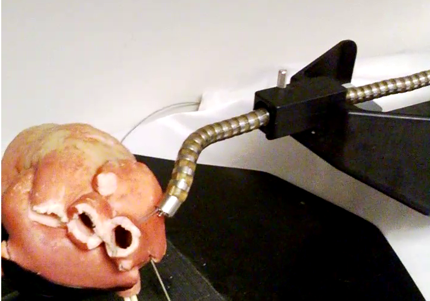
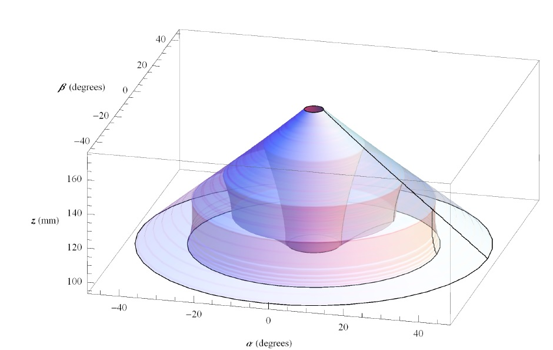
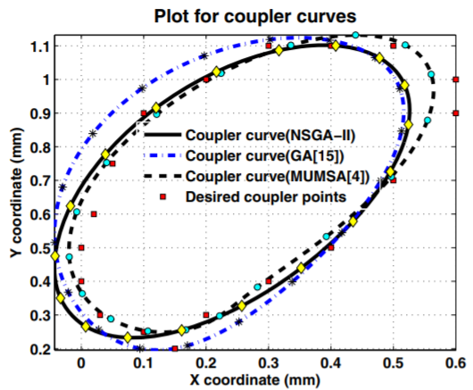
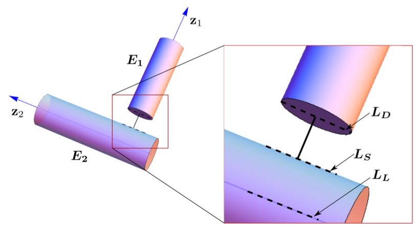
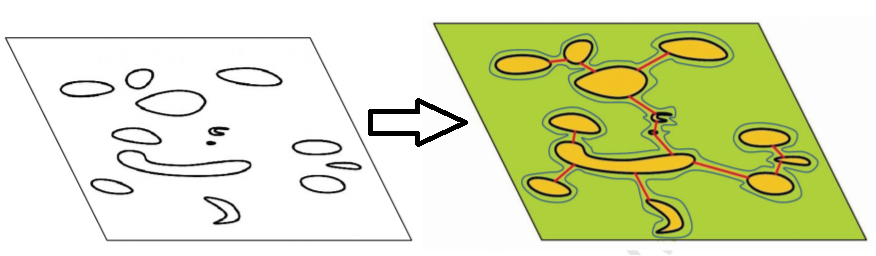

For my thesis, I developed probabilistic approaches for pose estimation. In collaboration with Dr. Nabil Simaan (Vanderbilt University) and Dr. Russ Taylor (Johns Hopkins University), I have been working on developing approaches for Complementary Situational Awareness (CSA). The CSA is transformative because it ushers in a new era of human-robot partnerships where robots act as our partners, not only in manipulation, but in perception and control. CSA will have a profound impact in minimally invasive robotic surgery as well as confined space manufacturing, where in the near future people and robots will be working together in a shared space on collaborative tasks.
During my Masters, I worked with Dr. Sandipan Bandyopadhyay (Indian Institute of Technology Madras) on developing a 3 Dof reconfigurable spatial parallel manipulator called MaPaMan. My research focussed on mechanism design, kinematics and singularity analyses of parallel manipulators.
In addition to robotics, I also have an active interest in product development. I had a brief stint developing a product called Tangle , that keeps earphones from entangling. We ran an Indiegogo campaign and sold the product to 18 countries.
Probabilistic Pose Estimation Using a Bingham Distribution-Based Linear Filter R. Arun Srivatsan, Mengyun Xu, Nicolas Zevallos and Howie Choset in the International Journal of Robotics Research (IJRR), June 2018. PDF | code
Bingham Distribution-Based Linear Filter for Online Pose Estimation R. Arun Srivatsan, Mengyun Xu, Nicolas Zevallos and Howie Choset in proceedings of Robotics: Science and Systems (RSS), MIT, Boston, 2017. PDF | bib | Video
Estimating SE(3) elements using a dual-quaternion based linear Kalman filter R. Arun Srivatsan , Gillian T. Rosen, Feroze M. Naina and Howie Choset in the Proceedings of Robotics Science and Systems (RSS), Michigan, USA, June 2016. PDF | bib | Video|
code
Registration with a small number of sparse measurements R. Arun Srivatsan, Nicolas Zevallos, Prasad Vagdargi and Howie Choset submitted to the International Journal of Robotics Research (IJRR), 2018 (Under review).
Sparse Point Registration R. Arun Srivatsan, Prasad Vagdargi and Howie Choset in proceedings of International Symposium on Robotics Research (ISRR), 2017. PDF | bib | Video

Multiple Start Branch and Prune Filtering Algorithm for Nonconvex Optimization R. Arun Srivatsan and Howie Choset in proceedings of the Workshop on the Algorithmic Foundations of Robotics (WAFR), San Francisco, USA, December 2016. PDF | bib | Video
Approaches for Complementary Situational Awareness in minimially invasive surgeries
Complementary Model Update: A Method for Simultaneous Registration and Stiffness Mapping in Flexible Environments R. Arun Srivatsan, Elif Ayvali, Long Wang, Rajarshi Roy, Nabil Simaan and Howie Choset In the proceedings of the International Conference on Robotics and Automation (ICRA), Stockholm, Sweden, May 2016.
PDF | bib | Video
Simultaneous Registration and Stiffness mapping of a Flexible Environment using Stiffness and Geometric Prior R. Arun Srivatsan, Long Wang, Elif Ayvali, Nabil Simaan, and Howie Choset in the proceedings of the Hamlyn symposium on Medical Robotics, UK, June 2016. PDF | bib | Video
Multimodal Approach to Registration Using Stereo Imaging and Contact Sensing Prasad Vagdargi, R. Arun Srivatsan, Nicolas Zevallos, Feroze M. Naina and Howie Choset in Robotics: Science and Systems (RSS), Workshop on 'Revisiting Contact - Turning a problem into a solution', 2017. PDF | bib | Video
Registering Surgical Tool to a Soft Body using Mechanical Palpation R. Arun Srivatsan, Rajarshi Roy, Long Wang, Nabil Simaan, and Howie Choset Tech. report CMU-RI-TR-13, Robotics Institute, Carnegie Mellon University, June, 2015. PDF | bib | Video
Trajectory-Optimized Sensing for Active Search of Tissue Abnormalities in Robotic Surgery Hadi Salman, Elif Ayvali, R. Arun Srivatsan, Yifei Ma, Nicolas Zevallos, Rashid Yasin, Long Wang, Nabil Simaan and Howie Choset In the proceedings of the International Conference on Robotics and Automation (ICRA), Brisbane, Australia, 2018. PDF | bib | Video
Simultaneous Registration and Stiffness mapping of a Flexible Environment using Stiffness and Geometric Prior Elif Ayvali, R. Arun Srivatsan, Long Wang, Rajarshi Roy, Nabil Simaan, and Howie Choset the proceedings of the International Conference on Robotics and Automation (ICRA), Stockholm, Sweden, May 2016. PDF | bib | Video
A Real-time Augmented Reality Surgical System for Overlaying Stiffness Information Nicolas Zevallos, R. Arun Srivatsan, Hadi Salman, Lu Li, Jianing Qian, Saumya Saxena, Mengyun Xu, Kartik Patath and Howie Choset in proceedings of Robotics: Science and Systems (RSS), Pittsburgh, PA, 2018.<\br>
PDF | bib | Video
A surgical system for automatic registration, stiffness mapping and dynamic image overlay Nicolas Zevallos, R. Arun Srivatsan, Hadi Salman, Lu Li, Jianing Qian, Saumya Saxena, Mengyun Xu, Kartik Patath and Howie Choset in proceedings of 2018 International Symposium on Medical Robotics (ISMR), Atlanta, GA, 2018. (Best paper finalist) PDF | bib | Video
Dynamic Texture Mapping of 3D models for Stiffness Map Visualization Kartik Patath, R. Arun Srivatsan, Nicolas Zevallos and Howie Choset workshop on medical imaging, IEEE/RSJ International Conference on Intelligent Robots and Systems (IROS), Vancouver, Canada, 2017. PDF | bib | Video
Development of an Inexpensive Tri-axial Force Sensor for Minimally Invasive Surgery Lu Li, Bocheng Yu, Chen Yang, Prasad Vagdargi, R. Arun Srivatsan and Howie Choset in proceedings of the IEEE/RSJ International Conference on Intelligent Robots and Systems (IROS), 2017. PDF | bib | Video

Using Lie algebra for shape estimation of medical snake robots R. Arun Srivatsan, Matthew Travers and Howie Choset in the proceedings of the 27th IEEE/RSJ International Conference on Intelligent Robots and Systems (IROS), Chicago, USA, September 2014. PDF | bib | Video
Kinematics, design and analysis of parallel manipulators

Computation of the safe working zones of parallel manipulators Murali Karnam, Aravind Baskar, R. Arun Srivatsan, and Sandipan Bandyopadhyay submitted to Robotica, 2018 (Under review).
Determination of the safe working zone of a parallel manipulator R. Arun Srivatsan, and Sandipan Bandyopadhyay Proceedings of the 6th International Workshop of Computational Kinematics (CK), May 2013, Series: Mechanisms and Machine Science, Volume 15. PDF | bib | Video
On the position kinematic analysis of MaPaMan: a reconfigurable three-degrees-of-freedom spatial parallel manipulator R. Arun Srivatsan, and Sandipan Bandyopadhyay Mechanism and Machine Theory, Volume 62, Pages150-165, 2013, DOI 10.1016/j.mechmachtheory.2012.11.008 PDF | bib | Video
Analysis of the degrees-of-freedom of spatial parallel manipulators in regular and singular configurations R. Arun Srivatsan, Sandipan Bandyopadhyay and , Ashitava Ghosal Mechanism and Machine Theory, Volume 69, November 2013, Pages 127-141. PDF | bib | Video
Analysis of constraint equations and their singularities R. Arun Srivatsan and Sandipan Bandyopadhyay in the proceedings of 14th International Symposium on Advances in Robot Kinematics (ARK), Slovenia, June 2014. PDF | bib | Video

Coupler-curve synthesis of a planar four-bar mechanism using a genetic algorithm based optimization method Jaideep Badduri, R. Arun Srivatsan, G. Saravana Kumar and Sandipan Bandyopadhyay in the proceedings of the 9th International Conference on Simulated Evolution And Learning (SEAL), December 2012, Volume 7673, pp 460-469, DOI 10.1007/978-3-642-34859-4_46. PDF | bib | Video
Coupler-curve synthesis via multi-objective optimisation using NSGA-II Jaideep Badduri, R. Arun Srivatsan, G. Saravana Kumar and Sandipan Bandyopadhyay In proceedings of iNaCoMM, December 2013. PDF | bib | Video
Computational geometry

Analytical Determination of the Proximity of Two Right-circular Cylinders in Space Saurav Agarwal, R. Arun Srivatsan, and Sandipan Bandyopadhyay ASME. J. Mechanisms Robotics. 2016; 8(4):041010-041010-10. doi:10.1115/1.4032211.
An analytical formulation for finding the proximity of two arbitrary cylinders in space R. Arun Srivatsan, and Sandipan Bandyopadhyay in the Proceedings of the 1st International Conference on Advances in Robotics (AIR), July 2013. PDF | bib | Video

Minimum area enclosure and alpha hull of a set of freeform planar closed curves A. V. Vishwanath, R. Arun Srivatsan, and M. Ramanathan Computer-Aided Design, Volume 45, Issue 3, 2013, Pages 751–763, DOI 10.1016/j.cad.2012.12.001 PDF | bib | Video